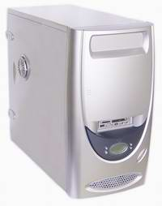
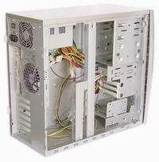
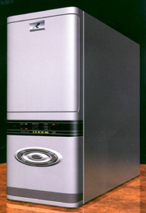
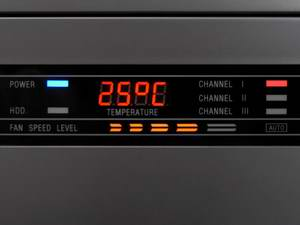
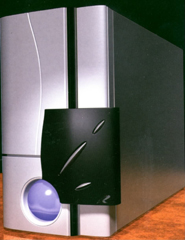
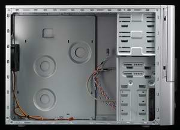
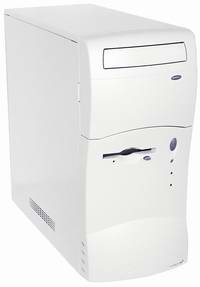
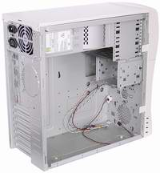
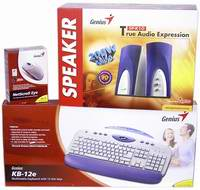

Корпуса для ПК
Корпуса для ПК
Автор: bizar
Когда вы приобретаете ПК, то не мало важное значение является выбор корпуса. Выбирать его нужно для определённых целей, например если это домашний компьютер который будет очень часто модернизироваться нужно использовать один тип корпуса, если это офисный компьютер то другой тип корпуса, если это сервер то третий тип корпусов и так далее. Первым делом мы рассмотрим корпуса для домашних целей. Вот список производителей корпусов, которые я нашел в интернете: Allied Telesyn, AOpen, Asustek, Avaya, Casetech, Chenbro Micom, Codegen, Delta, Delux, eCase, Enlight, Gembird, Genius, GeoIT, Hewlett-Packard, Intel, Inwin, JNC, Kaidzen, KM Korea, KME, Lantech, LinkWorld, Master Electronics, MEC, Microtek, NBase-Xyplex, Nikao, No Name, PowerMan, Rolsen, Sky Hawk, SuperMicro, Thermaltake, Top Device, V-Tech, Zyxel.
При выборе корпуса для дома мы часто смотрим на следующие - USB / аудио панель / поддерживаемые форматы / Отсеки расширения / Электропитание / и конечно внешний вид корпуса. Я на форуме разместил голосование следующих корпусов (смотрите ниже).
AOpen H700B, ATX, 350 Вт
| Тип |
Корпус для ПК черный, серебристый цвет |
| Тип корпуса |
полный тауэр |
| Поддерживаемые форматы |
ATX, full AT, микро ATX |
| Отсеки расширения |
6 x доступ спереди 5.25" x 1.6", 2 x доступ спереди 3.5" x 1",5 x внутренних 3.5" x 1" |
| Кол-во плат расширения (макс.) |
7 слотов |
| Материал |
металл, пластик |
| Электропитание |
внутренний бло? питания - 220 - 230 В (перемен. ток) - 350 ?т |
| Габариты, вес |
20.0 x 62.5 x 47.5 см, 13.0 кг |
Корпуса AOpen имеют точную и надежную конструкцию и соответствуют спецификации FCC. Эти корпуса отражают обязательства AOpen по качеству и предоставляют реселлерам возможность создавать системы отличного качества. Корпуса AOpen рекомендуется использовать с материнскими платами AOpen для достижения максимальной производительности.
MiddleTower AOpen H500B, ATX 2.03, 300 Вт
| Тип |
Корпус для ПК черного цвета |
| Тип корпуса |
средний тауэр |
| Поддерживаемые форматы |
ATX, микро ATX |
| Отсеки расширения |
4 x доступ спереди 5.25" x 1.6" 2 x доступ спереди 3.5" x 1" 2 x внутренних • 3.5" x 1" |
| Кол-во плат расширения (макс.) |
7 слотов |
| Материал |
металл, пластик |
| Электропитание |
внутренний бло? питания - 220 - 230 В (перемен. ток) - 300 ?т - поддерживает P4 (ATX 2.03) |
| Габариты, вес |
20.0 x 41.4 x 42.0 см, 7.5 кг |
Big tower InWin IW-J568 Silver 300W


- Тип - АТХ
- Штатные места для Винчестеров - 3
- 5,25" отсеков - 4
- 3,5" отсеков - 1
- Установленные Вентиляторы - 90x90
- Гнезда под Вентиляторы - 2шт, универсальные: 90x90 или 80x80
- Выходы на лицевой панели - USB, Audio, 6-in-1 Cardreader (SD/MMC/SM/MemoryStick/MemoryStickPro/CFTypeI/II)
- Блок Питания - 300/350/400 Вт
- Габариты (ВысотаХШиринаХГлубина) - 427х225х490 мм
- Особенности - боковые панели крепятся защелками, CD-ROM и FDD крепятся на салазках с защелками; корпус можно закрыть на навесной замок; съёмный 3,5" отсек для облегчённой установки и замены жёсткого диска. Часы, будильник, термометр с 2-мя датчиками
3R Systems R101 metal silver 300W


- Тип - АТХ
- Штатные места для Винчестеров - 7
- 5,25" отсеков - 4
- 3,5" отсеков - 1
- Установленные Вентиляторы - 2шт, 120х120
- Гнезда под Вентиляторы - Нет
- Выходы на лицевой панели - USB
- Блок Питания - 300 Вт
- Габариты (ВысотаХШиринаХГлубина) - 430x200x480 мм
- Особенности - дверца, убирающаяся вдоль боковой крышки, в комплект входит отвертка. Дисплей показывающий температуру от трех датчиков
3R Systems R201 metal silver 300W micro-ATX


- Тип - Micro АТХ
- Штатные места для Винчестеров - 5
- 5,25" отсеков - 3
- 3,5" отсеков - 2
- Установленные Вентиляторы - 1шт, 80x80
- Гнезда под Вентиляторы - 1шт, 80x80
- Выходы на лицевой панели - USB
- Блок Питания - 300 Вт
- Габариты (ВысотаХШиринаХГлубина) - 340x180x480 мм
- Особенности - дверца, убирающаяся вдоль боковой крышки, в комплект входит отвертка
Big tower InWin IW-J535.300W
Размеры (ВхШхД): (398x220x455) мм
Количество отсеков для дисководов: 3 x 5.25", 2 x 3.5", (внутри: 2 x 3.5")
Материнская плата: ATX
Слоты ввода/вывода: 7 слотов
Листовой металл: толщина 1.0 мм
Блок питания: АТХ 300Вт (включая БП с выводом 12 В для Рentium 4)
Вес: нетто - 8.0 кг; общий - 9.0 кг
Безопасность: под навесной замок
Отвечает требованиям: CE, FCC Class B
Big tower InWin IW-X568.300W (P4) ATX USB, Audio, clock, termometer, доп. вентилятор
Размеры (ВхШхД): (540х240х540) мм
Количество отсеков для дисководов: 4 x 5.25", 2 x 3.5", (внутри: 5 x 3.5")
Материнская плата: Full Size ATX, Baby AT
Блок питания: АТХ 300Вт (включая БП с выводом 12 В для Рentium 4)
Вес:
нетто: 13.4 кг
общий: 15.3 кг
Безопасность: возможность крепления к рабочему столу
Отвечает требованиям: CE, FCC Class B
Codegen 6049L-C10 MiddleTower 300W ATX (P4), USB, FAN
- Тип - АТХ
- Штатные места для Винчестеров - 5
- 5,25" отсеков - 4
- 3,5" отсеков - 2
- Установленные Вентиляторы - 1шт. на выдув
из корпуса; под крышкой
- Гнезда под Вентиляторы - 2
- Выходы на лицевой панели - USB, Audio
- Блок Питания - 250, 300, 350 Вт
- Габариты (ВысотаХШиринаХГлубина) - 445x195x485
Codegen 8011-C10 MiddleTower 350W ATX (P4), USB, FAN
- Тип - АТХ
- Штатные места для Винчестеров - 2
- 5,25" отсеков - 7
- 3,5" отсеков - 1
- Установленные Вентиляторы - 1шт. на выдув из корпуса; под крышкой сверху
- Выходы на лицевой панели - USB, Audio (сверху)
- Блок Питания - 300, 350
- Габариты (ВысотаХШиринаХГлубина) - 430x205x505
Codegen 8012-1 MiddleTower 300W ATX (P4), USB, FAN
Размеры: 200 x 500 x 423 mm (W x H x L)
Толщина стенок: 0.8 мм
Отсеки:
5.25" - 5
3.5" - 1 + 2 (внутренних)
Блок питания: 300 или 400W ATX (P4)
Расположение БП: Горизонтально
Выходы на передней панели: USB, Audio
Охлаждение: передний и задний 80mm вентиляторы
Цвета: 8012-1 - белый, 8012-CA - чёрный
Особенности: Зеркальная дверца
Kit Middle tower Genius VENUS2300W P4 ATX, колонки AS K10, KB Genius KB12e PS/2 , Genius NScr Eye Mouse PS/2



- Тип - Miditower, ATX
- Штатные места для Винчестеров - 2
- 5,25" отсеков - 3
- 3,5" отсеков - 1
- Установленные Вентиляторы - Нет
- Гнезда под Вентиляторы - 1шт универсальный 80х80 или 90х90 и 1шт 80х80
- Выходы на лицевой панели - Нет
- Блок Питания - HEC 300 Вт
- Габариты (ВысотаХШиринаХГлубина) - 420x198x445 мм
- Особенности - В комплекте: клавиатура KB-12e, мышка NetScroll Eye, колонки K-10. Корпус можно закрыть на навесной замок. Съемная корзина для винчестера и дисковода
А вот замечательный корпуса для офиса, они компактные и внешний вид как раз создан для офиса.
Codegen MS-2 G7 Desktop 200W Micro-Flex-ATX (P4) USB
- Тип - Micro-АТХ
- Штатные места для Винчестеров - 1
- 5,25" отсеков - 1
- 3,5" отсеков - 1
- Установленные Вентиляторы - 1шт. 80x80
- Гнезда под Вентиляторы - Нет
- Выходы на лицевой панели - USB, Audio
- Блок Питания - 180, 200 Вт
- Габариты (ВысотаХШиринаХГлубина) - 326х95х410
Desktop InWin IW-H500.300W (P4) ATX
Кол-во 5.25" отсеков: 2
Кол-во 3.5" внешних отсеков: 2
Кол-во 3.5" внутренних отсеков: 1
Кол-во 5.25" внутренних отсеков: 1
Размеры высота/ширина/длина: (156/445/456) мм
Типы совместимых мат. плат: ATX или AT
Тип БП: ATX 300 Ватт, (включая БП с выводом 12 В для Рentium 4)
Вес в упаковке / без упаковки: 8.5кг/7.6кг
Desktop InWin IW-D551.240W (P4) USB MicroATX
- Тип - Micro АТХ, DeskTop
- Штатные места для Винчестеров - 1
- 5,25" отсеков - 2
- 3,5" отсеков - 1
- Установленные Вентиляторы - Нет
- Гнезда под Вентиляторы - 80x80
- Выходы на лицевой панели - USB
- Блок Питания - 180 Вт
- Габариты (ВысотаХШиринаХГлубина) - 132х370х416 мм
- Особенности - съёмный 3,5" отсек для облегчённой установки и замены жёсткого диска, блок питания нестандартного размера